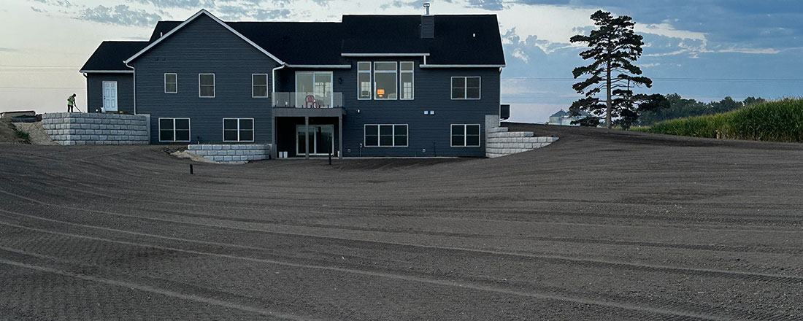
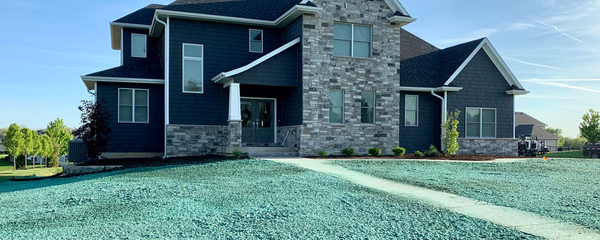
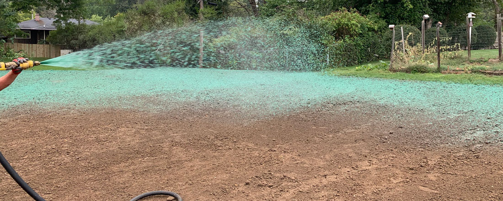
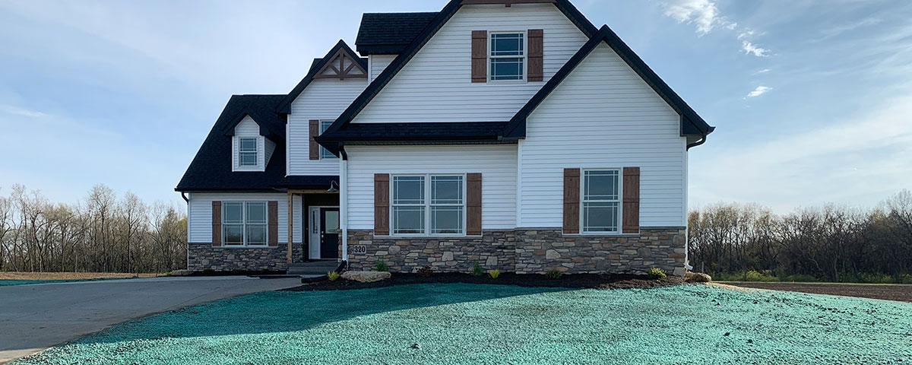

At JSN Property Maintenance, we believe that a well-maintained property is the foundation of a thriving community. As a trusted name in residential and commercial property care, we specialize in delivering top-tier maintenance solutions tailored to meet the unique needs of every client. From landscaping and seasonal cleanups to routine repairs and emergency services, our team is committed to excellence, reliability, and customer satisfaction. With a focus on quality craftsmanship and attention to detail, JSN Property Maintenance ensures your property always looks its best—so you can focus on what matters most.
At JSN Property Maintenance, we believe that a well-maintained property is the foundation of a thriving community. As a trusted name in residential and commercial property care, we specialize in delivering top-tier maintenance solutions tailored to meet the unique needs of every client. From landscaping and seasonal cleanups to routine repairs and emergency services, our team is committed to excellence, reliability, and customer satisfaction. With a focus on quality craftsmanship and attention to detail, JSN Property Maintenance ensures your property always looks its best—so you can focus on what matters most.
At JSN Property Maintenance, we believe that a well-maintained property is the foundation of a thriving community. As a trusted name in residential and commercial property care, we specialize in delivering top-tier maintenance solutions tailored to meet the unique needs of every client. From landscaping and seasonal cleanups to routine repairs and emergency services, our team is committed to excellence, reliability, and customer satisfaction. With a focus on quality craftsmanship and attention to detail, JSN Property Maintenance ensures your property always looks its best—so you can focus on what matters most.
At JSN Property Maintenance, we believe that a well-maintained property is the foundation of a thriving community. As a trusted name in residential and commercial property care, we specialize in delivering top-tier maintenance solutions tailored to meet the unique needs of every client. From landscaping and seasonal cleanups to routine repairs and emergency services, our team is committed to excellence, reliability, and customer satisfaction. With a focus on quality craftsmanship and attention to detail, JSN Property Maintenance ensures your property always looks its best—so you can focus on what matters most.





We proudly provide our comprehensive landscaping services to Bettendorf and surrounding communities throughout the Quad Cities area. Our local team is familiar with Davenport's diverse neighborhoods and specific landscape needs, ensuring we deliver exceptional results whether you're in Downtown, East Village, or the developing north and west sides.
📞 Phone: (123) 456-7890
✉️ Email: service@jsn.com
🏢 Address: 123 Main St, Anytown, USA